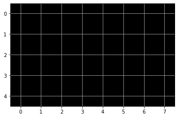
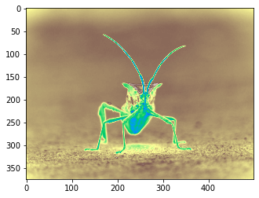
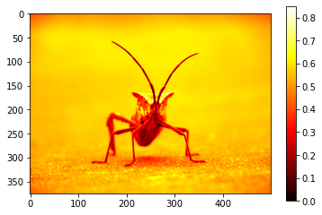

Images¶
Pour commencer nous devons importer ces modules.
import matplotlib.pyplot as plt
import matplotlib.image as mpimg
import numpy as np
Chargeons une image depuis un fichier.
img = mpimg.imread('stinkbug.png')
print(img)
[[0.40784314 0.40784314 0.40784314 ... 0.42745098 0.42745098 0.42745098]
[0.4117647 0.4117647 0.4117647 ... 0.42745098 0.42745098 0.42745098]
[0.41960785 0.41568628 0.41568628 ... 0.43137255 0.43137255 0.43137255]
...
[0.4392157 0.43529412 0.43137255 ... 0.45490196 0.4509804 0.4509804 ]
[0.44313726 0.44313726 0.4392157 ... 0.4509804 0.44705883 0.44705883]
[0.44313726 0.4509804 0.4509804 ... 0.44705883 0.44705883 0.44313726]]
L’image à 375 lignes et 500 colonnes.
len(img), len(img[0])
(375, 500)
imgplot = plt.imshow(img);

plt.imshow(img, cmap="hot");

imgplot = plt.imshow(img)
imgplot.set_cmap('nipy_spectral')

imgplot = plt.imshow(img)
imgplot.set_cmap('terrain')

plt.imshow(img, cmap='hot')
plt.colorbar();
